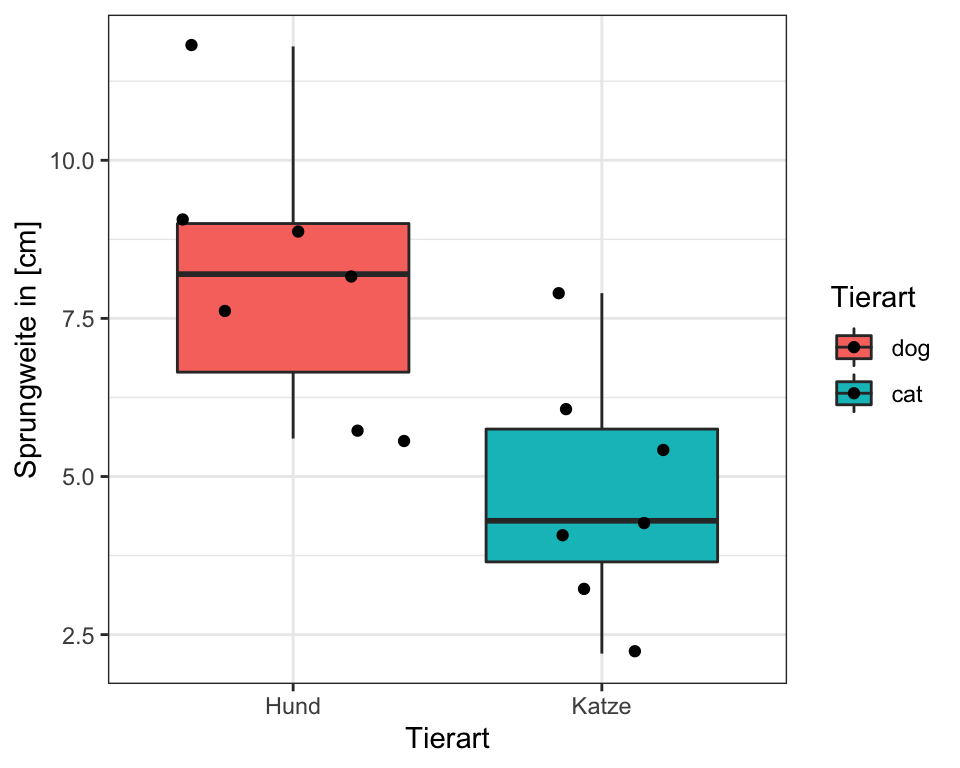
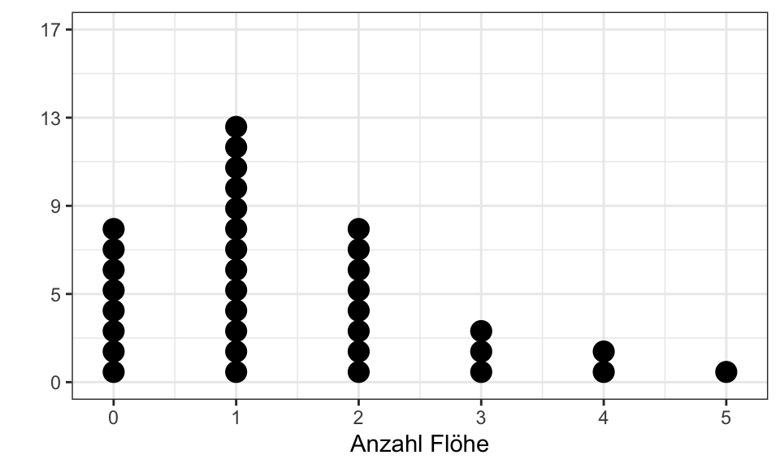

3 Vorwort
Ein Wort der Warnung…
Wenn du dieses Bild eines niedergeschlagenen Engels der Statistik siehst…

… dann bedeutet der niedergeschlagene Engel der Statistik:
- Wir opfern Genauigkeit für Anwendbarkeit. Ja, manchmal ist es eben statstisch nicht richtig was hier steht, aber aus Gründen der Anwendung fahren wir mal über den Engel drüber. Schade.
- Wir sind hier Anfänger und Anwender. Später kannst du noch tiefer ins Detail gehen. Hier wollen wir die Grundlagen lernen. Das hat dann einen Preis an Richtigkeit.
- Wir wollen fertig werden. Durch geschicktes Manövrieren können wir an einen Punkt kommen, wo kein statistischer Test mehr passt. Das wollen wir nicht. Deshalb zahlen wir hier auch einen Preis. Passt aber.
Deshalb konzentrieren wir uns auf einige wichtige Lernziele, die wir jetzt einmal nacheinander durchgehen.
3.1 Lernziel 1: Eine explorative Datananalyse durchführen
Gleich zu Beginn R Code zu zeigen und eine entsprechende Abbildung ist vielleicht ungewöhnlich, aber wir wollen zu dieser Abbildung 3.1 hin. In Abbildung 3.1 siehst du einen Boxplot. Und wie wir aus den Daten flea_dog_cat.xlsx einen Boxplot erstellen, das soll uns in den nächsten Kapitel beschäftigen. Dafür müssen wir nämlich eine Menge in dem Codeblock verstehen und dann auch Anwenden können. Und natürlich lernen was eigentlich ein Boxplot ist und was in einem Boxplot eigentlich dargestellt ist.

Hier ist der Codeblock der in R die Abbildung 3.1 erstellt.
## Einlesen von Daten aus Excel
data_tbl <- read_excel("data/flea_dog_cat.xlsx")
## Umformen der <chr> Spalte in einen Factor <fct>
data_tbl <- data_tbl %>%
mutate(animal = as_factor(animal))
## Auswählen der wichtigen Spalten für den Boxplot
data_tbl <- data_tbl %>%
select(animal, jump_length)
## Generieren des Boxplots in ggplot()
ggplot(data_tbl, aes(x = animal, y = jump_length,
fill = animal)) +
geom_boxplot() +
geom_jitter() +
labs(x = "Tierart", y = "Sprungweite in [cm]",
fill = "Tierart") +
scale_x_discrete(labels = c("Hund", "Katze")) +
theme_bw()Wir müssen nun folgende Dinge lernen um den Codeblock zu verstehen:
- Wir müssen das Datenbeispiel verstehen. Was sind das eigentlich für Daten, die wir da abbilden? Was sind überhaupt Daten im Sinne der Statistik bzw. für R.
- Wir müssen den R Code verstehen. Von einzelnen wichtigen Opertatoren wie
->und%\>%zu dem den Unterschieden von Worten und Objekten. - Wie kriegen wir Daten aus Excel in R hinein? Wir können die Daten ja nicht einfach in R eintragen sondern haben die Daten ja meist in einer (Excel) Datei wie
flea_dog_cat.xlsx. - Was ist eigentlich ein Boxplot und welche statistsichen Maßzahlen werden hier eigentlich abgebildet?
- Wie funktioniert eigentlich die Funktioen
ggplot()mit der wir den Boxplot erstellt haben?
All diese Fragen und weitere Fragen, die sich diesen Fragen anschließen, wollen wir uns in den nächsten Kapitel anschauen. Leider kann ich hier nur linear schreiben.
3.2 Lernziel 2: RStudio und R
Wir arbeiten in R und nutzen dafür das RStudio. Führe einfach folgende Schritte aus.
- R installieren unter https://cran.rstudio.com/
- RStudio installieren unter https://www.rstudio.com/products/rstudio/download/#download
Bitte die Reihenfolge bachten. Beide Schritte kannst du dir auch nochaml im Video anschauen oder aber du kommst in das R Tutorium was regelmäßig an der Hochschule Osnabrück von mir angeboten wird.
Du findest auf YouTube Einführung in R - Teil 01 - Installation von RStudio und R als Video. Ich gehe in dem Video einmal alle wichtigen Schritte durch und so kannst du dir Rstudio und R installieren.
3.3 Lernziel 3: Statistische Versuche verstehen
Wie funktioniert ein statistischer Versuch? Ich könnte auch wissenschaftliches Experiment schreiben, aber ein wissenschfatliches Experiment ist sehr abstrakt. Wir wollen ja einen Versuch durchführen und danach - ja was eigentlich? Was wollen wir nach dem Versuch haben? Meistens eine neue Erkenntnis. Um diese Erkenntnis zu validieren oder aber abzusichern nutzen wir Statistik. Dazu musst du noch wissen, dass wir eine spezielle Form der Statistik nutzen: die frequentistische Statistik.
Die frequentistische Statistik basiert - wie der Name andeutet - auf Wiederholungen in einem Versuch. Daher der Name frequentistisch. Also eine Frequenz von Beobachtungen. Ist ein wenig gewollt, aber daran gewöhnen wir uns schon mal. Konkret, ein Experiment welches wir frequentistisch Auswerten wollen besteht immer aus biologischen Wiederholungen. Wir müssen also ein Experiment planen in dem wir wiederholt ein Outcome an vielen Tieren, Pflanzen oder Menschen messen. Auf das Outcome gehen wir noch später ein. Im Weiteren konzentrieren wir uns hier auf die parametrische Statistik. Die parametrische Statistik beschäftigt sich mit Parametern von Verteilungen. Ein schwieriger Satz. Schauen wir uns einmal eine Verteilung an. Abbildung 3.2 zeigt eine Normalverteilung.

Eine Verteilung hat Parameter. Parameter sind die Eigenschaften einer Verteilung, die notwendig sind um eine Verteilung vollständig zu beschreiben. Im Falle der Normalverteilung brauchen wir einen Paramter für den höchsten Punkt der Kurve, sowie einen Parameter für die Ausbreitung, also wie weit geht die Kurve nach links und nach rechts.
- Der Mittelwert beschriebt den höchsten Punkt einer Normalverteilung.
- Die Standardabweichung beschreibt die Ausbreitung einer Normalverteilung.
- Wir messen wiederholt ein Outcome an verschiedenen Tieren, Pflanzen oder Menschen
- Wir überlegen uns aus welcher Verteilungsfamilie unser Outcome stammt
https://rstudio-pubs-static.s3.amazonaws.com/100906_8e3a32dd11c14b839468db756cee7400.html
Hundeffloh Beispiel in groß!!! Dormann (2013) Hurlbert (1984)
Mit der Poisson Verteilunt anfangen??? Nur ein Lageparameter und eine diskrete Verteilung. Dann rüber zur Normalverteilung und mit der dann zum t-Test…